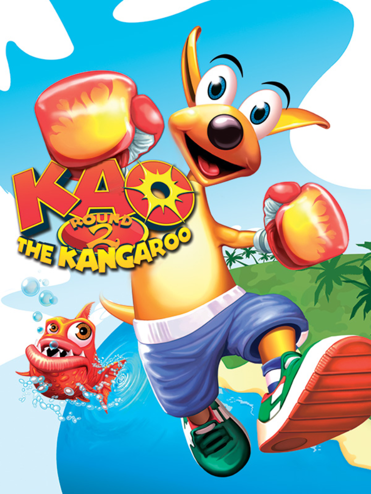

Kao the Kangaroo: Round 2
Kao the Kangaroo: Round 2
Detalhes
|  | |
| Tempo de jogo | 9m 0s |
| Última Atividade | 04/12/2021 11:28:32 |
| Adicionado | 11/02/2025 13:17:42 |
| Modificado | 11/02/2025 13:37:38 |
| Status de Conclusão | Jogado |
| Biblioteca | Steam |
| Fonte | Steam |
| Plataforma | PC (Windows) |
| Data de Lançamento | 04/11/2003 |
| Pontuação da Comunidade | 80 |
| Avaliação da crítica | |
| Pontuação do Usuário | |
| Gênero | Adventure Platform Racing |
| Desenvolvedor | Tate Interactive |
| Editor | Atari, Inc. JoWooD Productions Software |
| Funções | Single Player |
| Links | Steam GOG Epic Itch Official Twitch |
| Tag | |
Descrição

Play as Kao! The cutest and bravest kangaroo of all video games returns in this digital version of “Kao the Kangaroo: Round 2."
Experience the joy of playing a classic 3D single-player platformer filled with various challenges, including fighting, racing and solving puzzles.
Bounce through 25 levels set in 5 unique, colorful worlds to rescue your animal friends captured by the evil Hunter and his henchmen!

Experience the digital version of a classic 3D arcade platformer with online features like:
* Steam achievements
* Steam cloud saving
* High resolution support
* Controller support (Xbox 360/ One and PS4)
* Bounce through 25 levels set in 5 unique, colorful worlds
* Punch the baddies! Use a variety of different fighting techniques to rescue your friends
* Approximately 30 challenging enemies to defeat
* Boss encounters

The digital version of Kao the Kangaroo is a nostalgic journey to the past for all players who grew up with the classic platformers. This is a fun, educational experience – enjoy vintage gameplay on this classic 3D arcade game.
Once you add it to your library, it will never leave.

The opportunity to play this classic version of Kao the Kangaroo was made possible thanks to engagement and requests from loyal Kao fans. These wonderful players came together under #BringKaoBack and asked us to release Kao digitally.
This moved us deeply, and we decided to grant their request and release the game as our way of saying “Thank you for being with Kao for the last 2 decades.” We also want to thank you for your interest in our game, since you are here on our product page.